Manual
DUB-1 (a working name) turns the M-VAVE FM-1 into a generative dub techno machine. It plays itself from the moment it's switched on: chord stabs through a resonant low-pass into a tape echo, short FM pings on loops of unequal length, a sub bass on one of five grooves, a kick that ducks the rest (four on the floor, or sparser, a phrase at a time), a shaker and an open hat, and a crackle that rings on the chord. An eight-bar arrangement takes the kick out for a break, thins the layers and brings them back with a fill, and now and then a stab is thrown into the echo. The drums and the bass play in phrases, a main bar three times and a variant on the fourth. You don't play it, you steer it: pick a piece and a scale, take notes out, open the filter, push the feedback, hold the echo, lock the groove.
DUB-1 is a fork of AMB-1, Charles Vestal's generative ambient firmware for the FM-1.
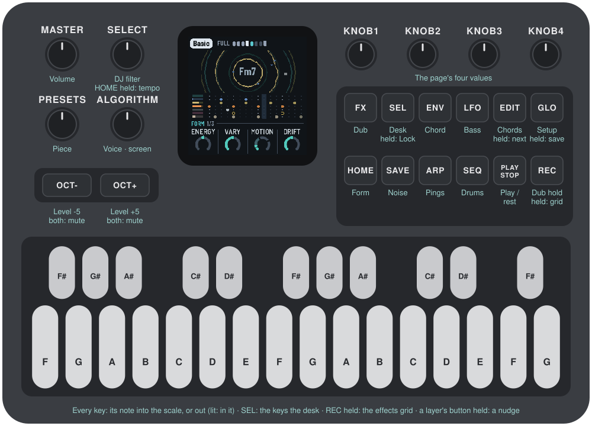
1 Install
Try it first in the browser, with no FM-1: <https://sbegueria.github.io/fm1-dub/emu/>. It's the same code the FM-1 runs, with sound.
Install from the browser: open <https://sbegueria.github.io/fm1-dub/install/> in Chrome or Edge (they have Web MIDI), connect the FM-1 with a USB data cable, switch it on and press Install. Nothing to install on the computer. Don't unplug it while it's writing; when it finishes, the FM-1 restarts into DUB-1.
Or from the command line: download dub-1.3.0.fwsc from the releases, install Python 3 with pip3 install mido python-rtmidi, and run, in a checkout of the source:
python3 tools/fm1_install.py dub-1.3.0.fwscGo back: the installer page's "Back to the stock firmware", or M-VAVE's own updater, M-UPGRADE, puts the stock firmware back.
Installing other firmware is at your own risk. If the FM-1 ever won't start, see Recovering an FM-1 that won't start.
2 Getting started
DUB-1 starts playing as soon as it's on. A few minutes with it:
- Listen. The first piece, Basic, is playing: F Dorian at 122, saw stabs into a dotted-eighth echo, an offbeat sub, the kick, the shaker and the open hat. Turn MASTER for the volume.
- Try another piece. Turn PRESETS. Each of the eight pieces has its own key, tempo, sounds, groove and amount of movement.
- Change the scale. Press a key whose note is lit: it leaves the scale, and nothing plays it any more. Press it again to bring it back. Any key that isn't lit adds its note.
- Move on. Press EDIT: the chord moves to the next one at the start of the next bar.
- Hold the echo. Press REC: dub hold. The echo stops listening and repeats what it holds, over and over, while the stabs, pings and drums go on dry above it. Press REC again to let it go.
- Shape a layer. Each layer has a button: ENV the chord, ARP the pings, LFO the bass, SEQ the drums, SAVE the noise, FX the space (again, the Echo page), HOME the whole (the Dub page; again, the Key page: tempo, root, mode, swing), GLO the setup. The page's name is at the top right. KNOB 1–4 set the four values at the bottom of the screen; while one turns, the line above them says what it does. SELECT steps through the pages, in the order their buttons sit on the panel. Try Cutoff on the Chord page, or Feedback on the Space page. Or turn the Filter on the Dub page (KNOB 1) down, and bring it back. On a layer's page, OCT− and OCT+ turn that layer down and up; both together, a quick press, mute it (and bring it back).
- Rest. Press PLAY: the music stops and the echo and reverb ring away. PLAY again and it starts from the top of a phrase.
What you change is kept with the piece. DUB-1 saves it by itself while resting, or hold GLO for half a second (or turn Setup's KNOB 4).
Want a new colour? Hold a layer's button (ENV, ARP, LFO or SEQ) for half a second: its sound takes a small step somewhere new.
Like the groove as it is? Hold SEL for half a second: Lock. Each new phrase keeps the kick, the drums' and the bass's patterns and the noise's groove until you hold SEL again.
3 Controls
The drawing at the top shows them all; here they are in more detail.
| Control | What it does |
|---|---|
| Keys | The scale. Each key adds its note to the scale or takes it out; the keys light up for the notes in it. Every octave of a note is the same key. The root stays ("THE ROOT STAYS"), and the scale keeps at least three notes ("3 NOTES AT LEAST"). |
| PLAY | Play / rest. DUB-1 starts playing by itself when it's switched on. At rest, the echo's feedback eases under 90% so its tails die away, the reverb rings out and the noise fades. Playing again starts from the first bar of a phrase. Lit while playing. |
| REC | A tap: dub hold: the echo stops listening and repeats what it holds, sample for sample, for ever; the reverb stops listening too and rings on; the chord doesn't move. The stabs, pings and drums go on, dry, above it. Tap again to let go. Lit while held. Held: the effects grid (below). |
| EDIT | A tap: the Chords page (below): the eight chords coming, to see and change (again, it stays). Held (half a second): the next chord, at the start of the next bar (at once while resting; in dub hold, once you let go); a card says NEXT CHORD until the chord changes. Held on (1.5 s): new chords, the walk's all walked again (yours, the gaps and the one playing kept); a red card, NEW CHORDS. |
| SEL | A tap: PERFORM: the knobs become the master actions (Filter, Wet, Energy, Duck) and the keys stop being the scale: they mute and solo the layers, make the dub moves, and white 6 held puts the mix on the knobs (see below). Again, it stays; a page's button or SELECT leaves it. Lit while on. Held (half a second), on any page: Lock on or off (below). |
| HOME | The Dub page: the Filter and the machine's movement. Again: the Key page (tempo, root, mode, swing), and again back to Dub; HOME blinks on the Key page. Held on for 1.5 s (nothing turned meanwhile): a shake of everything, the chord, the pings, the bass, the drums and the noise at once ("SHAKE ALL"), the page kept; again and again, to explore until something sounds right. Held with SELECT turned: the tempo. |
| ENV · ARP · LFO · SEQ | The layers' pages: Chord, Pings, Bass, Drums. Again: the layer's sound page, then its FM page (an FM voice) or, for the drums, the Pattern page, then back. Held (half a second): a nudge to the layer's sound; held on (1.5 s): a shake (below). |
| FX · GLO | The Space page (FX again: the Echo page, FX blinking; again, back); the Setup page, for what holds for every piece (GLO again, it stays). The lit button shows the page. FX held: a nudge to the space; held on: a shake (a new echo time). GLO held (half a second, then let go): saves all eight pieces (a card, SAVED); held on (1.5 s): the piece back to its recipe (a red card, RESET). |
| SELECT | The previous or next page, in the order the page buttons sit on the panel, the top row then the bottom one: Space (FX), Chord (ENV), Bass (LFO), Setup (GLO), Dub (HOME), Noise (SAVE), Pings (ARP), Drums (SEQ). The eight dots under the page's name, top right, show where you are, in the same order. From a sound page, an FM page, the Pattern, Key or Echo page or Noise space, it goes on from its page's place in the round (the Noise page's own, between Dub and Pings); from the Chords page or PERFORM, from the page you came from (and it leaves PERFORM). Hold HOME and turn it for the tempo, from any page. |
| ALGORITHM | On a layer's page (Chord, Pings, Bass, Drums): that layer's voice (see The voices). On the Noise pages: its character. On the Chords page: the walk's character (Home, Wander, Free). Anywhere else: the middle of the screen, as ripples, a scope or a spectrum (see The screen). The mode, a piece's choice, is on the Key page (HOME again). |
| PRESETS | The piece (see The pieces). |
| KNOB 1–4 | The four values on the screen. A few clicks are always single steps; a quick turn speeds up, so half a turn sweeps the range. While a knob turns, the line above the knobs says what it does. A centred knob (0 in the middle: the sound pages' −50…+50 ones, the Noise page's Density, Air and Tone, PERFORM's Filter, Wet and Energy) has a notch at 0: turning through, it stops there, and to leave it takes three clicks the same way (the first two are held back). A switch shows its positions as dots, up to ten (Drift, Mode, Algo). A grey knob does nothing there. |
| OCT− / OCT+ | On a layer's page (Chord, Pings, Bass, Drums or Noise, and their sound, FM and Pattern pages, and Noise space): that layer's level, 5 down or up a press ("BASS 55" in the header, and a big ring in the middle, in the layer's colour, the level inside, until a second after the last press); held, it keeps going. Both together, let go within a second: the layer muted ("BASS MUTED"), its level kept; again, back ("BASS ON"). The drums mute the kick and the hats together. These are PERFORM's mutes (white 1–5): a mute made here shows there, and the other way round. Held together for five seconds: the update mode (see Troubleshooting); a long press never mutes. On the other pages they do nothing. (The pings' octave is on the Pings page, KNOB 2.) |
| MASTER | Volume. |
| SAVE | The Noise page (below); again, Noise space (its width, its sends and how often its groove changes; SAVE blinks); again, back to the Noise page. Held: a nudge to the noise; held on (1.5 s): a shake (another noise character). Saving is on GLO. |
One rule for the buttons: a button with one page stays on it when you press it again (EDIT, SEL, GLO); a button with several steps through them (HOME: Dub, Key; FX: Space, Echo; SAVE: Noise, Noise space; a layer's: its page, its sound page, its FM or Pattern page). To leave a page, press another page's button or turn SELECT.
PERFORM (SEL). The knobs become the Perform page, the master actions, each acting on the whole music. Filter, Wet and Energy are 0 in the middle (the piece as it is), with the notch there, so it's easy to find:
| Knob | Down | Up |
|---|---|---|
| KNOB 1 · Filter | Shut 1–100: a low-pass on the music, down to about 230 Hz: under water | Open 1–100: a resonant high-pass, up to about 400 Hz: thin and bright |
| KNOB 2 · Wet | the whole music drier: the chord and the pings up front, less into the echo, the noise dry | the whole music drowned: the chord and the pings almost all echo, more into the echo, the noise into the echo and the plate |
| KNOB 3 · Energy | sparser and drier: fewer and quieter pings, fewer and quieter hats, fewer and shorter stabs, a thinner bass line, a sparser kick; past halfway, the next phrases go Thin (no bass, no shaker) | busier and brighter: more of each, louder hats, longer stabs, a thin bass filled back in, the kick nearer four on the floor; past halfway, the phrases stay Full, with a fill into each |
| KNOB 4 · Duck | 0: the music still, the kick on top of it | up to 100: each beat pushes the rest down, to −12 dB, the music pumping |
The Filter is the same as KNOB 1 on the Dub page (one value, on both pages); the kick is always left out of it, so it keeps pumping under the filtered music. PERFORM's Open and Shut keys push on top of it. Wet moves the chord's and the pings' Wet (their pages' KNOB 3) and the echo's send together, and the noise with them (its dry down, its plate and echo up): one knob for the whole music, dry and close or lost in the echo. It's an offset on top of those knobs, which stay where they are. Filter, Wet and Energy are for playing: they aren't saved, and they stay where they are when you change piece (turn the Filter down, change piece, open it again), back in the middle when the FM-1 starts.
Duck is the piece's own (it was the Drums page's KNOB 4 until 1.3.0), saved with it: how far each beat pushes the rest down, letting it back in over a little more than a tenth of a second. A kick ducks it fully; a beat without one a little less, and less again while the arrangement has the kick out (a Break), so the music keeps breathing (the ghost duck). The noise is ducked deeper than the music.
Hold white 6 for the Mix page: KNOB 1–4 the levels of the chord, the pings, the bass and the drums (the same levels OCT− / OCT+ set on each layer's page), until you let go. A muted layer's knob is grey, its level kept. A page's button or SELECT leaves PERFORM: the keys are the scale again (the mutes and solos stay), and SEL brings PERFORM back. A page's button goes to its page (HOME: the Dub page); SELECT goes on from the page you were on before PERFORM. The keys, from the lowest up, are three sets, with white 6 between them. Each key that does something is lit:
| 1 | 2 | 3 | 4 | 5 | 6 | 7 | 8 | 9 | 10 | 11 | |
|---|---|---|---|---|---|---|---|---|---|---|---|
| Black keys: solo | Chord | Pings | Bass | Kick | Hats | ||||||
| White keys: mute, mix, moves | Chord | Pings | Bass | Kick | Hats | Mix (held) | Throw | Open | Shut | Drop | Echo |
The first five black keys (F♯ G♯ A♯, C♯ D♯) sit above the five mutes, like a mixer's channel strip.
- White 6, held: the Mix page on the knobs. It blinks slowly in PERFORM, so it's easy to find, and goes dark while held. The mutes still act the moment you press them, with or without it.
- White 1–5, the chord, pings, bass, kick and hats: a press mutes the layer, another brings it back; lit while it plays. The levels stay as they are (a true mute: the Mix knobs don't move). They are the same mutes as OCT− + OCT+ on a layer's page (there, the drums' mute is the kick's and the hats' together): a mute made either way shows on the other. The mutes stay when you leave PERFORM. The music goes on underneath: a muted layer comes back where it would have been.
- Black 1–5, solos: a press solos the layer: the others go quiet (their echoes and reverb ring out). Solo more than one and they play together; press again to let one go. A soloed key blinks; the white keys show what you hear. SOLO shows top right, beside the page's name. Solos stay when you leave PERFORM, as the mutes do.
- White 7–11, moves, held (lit; dark while held): - Throw: every stab is thrown into the echo. - Open: the music thins and brightens over the kick: a resonant high-pass on everything but the kick sweeps up to about 400 Hz, and the chords' filter opens three octaves and sings, the echo's band-pass and the pings brighter with it. - Shut: the music goes under water while the kick keeps pumping: a low-pass on everything but the kick sweeps down to about 230 Hz, the chords' filter and the echo's band-pass closing with it. - Drop: the floor falls away: the kick and the bass out while held (the bass let go at once), both back on the next beat when you let go. The kick's mute (white 4) takes it out until you press again; Drop is the move you hold for a bar or two and release on the downbeat. - Echo: the echo pushed: everything into it, feeding back more. - Each sweeps in over about half a second; letting go eases back (to where the Filter knob is).
- The other keys do nothing in PERFORM; MIDI notes in still change the scale.
Lock (SEL held for half a second, on any page; held again, off). The groove stays as it is: each new phrase keeps the kick's shape, the noise's groove, the drums' and the bass's phrase plan (its B bars still B: see The arrangement) and the shaker's pattern, and Evolve's own nudges and moves of the bass's groove rest. The sections still come and go, the chords still move, and the stabs and the pings play on as Evolve has them. "lock" shows in red above the page's name, the phrase's eight dots all alike, and a card says it ("the groove kept", "the groove free"). A tap on SEL is still PERFORM. Lock isn't saved: the FM-1 starts with it off.
The Chords page (EDIT tapped): the chord machine, in view. The progression is eight slots. Each slot is one of three:
- a chord from the walk, in teal: the random walk over the scale's degrees (see The arrangement). It's a degree of the scale, so it follows the key and the mode when you change them;
- a chord you wrote, in white: as written, whatever the key;
- a gap, "(HOLDS)": the chord before it goes on.
| KNOB 1 · Slot | the slot you're editing (1–8), outlined on the screen |
| Keys | its root, any note (lit on the keys). A walk's chord becomes yours, keeping its kind and type; a gap becomes a minor chord on it |
| KNOB 2 · Chord | its kind: Empty (a gap), Major, Minor, Sus2, Sus4, Dim, Aug. Turning a walk's chord makes it yours |
| KNOB 3 · Type | Triad, 6, 7, Maj7, 9, 11, Add9 |
| KNOB 4 · Play | Endless or Loop |
| ALGORITHM | the walk's character: Home, Wander or Free. Its chords (the teal ones) are walked again at once, all but the one playing; yours and the gaps stay. The character shows at the left of the knob row |
Home, Wander, Free (ALGORITHM; Wander is the default) set how the walk moves, from the most settled to the most varied. Turning ALGORITHM rewrites the walk's chords on the page straight away, so you see and hear the change; in Loop it rolls a new loop from the teal slots (turn until you like it, then leave it). Home goes back to the home chord often (about two times in three) and leans on the IV, the way DUB-1 has always moved. Wander goes home less, spreads over more of the scale's chords and rarely bounces straight back to the chord before last. Free goes home least and treats the other chords evenly.
Endless: a new piece starts with eight chords from the walk, from home. The chord playing is always slot 1. When it moves on (every Drift bars, or EDIT held), every slot moves up one: a gap stays a gap, your chords stay yours. The walk then writes a new chord into slot 8, so you see the chords coming and can change them before they arrive.
Loop: the eight in turn, from the one playing, a chord every Drift bars, round again after the last that isn't a gap. Nothing new is written. Gaps at the end make the loop shorter. Switching from Endless to Loop keeps the eight you see, to catch a progression you like as it goes by. Back to Endless, the one playing moves up to slot 1 and the walk goes on.
Editing the slot that's playing is heard at once. The slot playing is lit; in Loop the other pages show "2/4" under the chord's name. EDIT again stays; any page's button, or SELECT, leaves the page. EDIT held (half a second), anywhere, moves to the next chord. The slots are kept with the piece.
The effects grid (REC held). After a moment the whole screen shows sixteen effects, four rows of four (the knobs do nothing while it's up); the white keys from the lowest play them, each as long as its key is held (even after you let go of REC). The first key of each row is lit, to find the rows by touch.
| Row | Key 1 | 2 | 3 | 4 |
|---|---|---|---|---|
| Echo (white 1–4) | Throw: every stab thrown into the echo | Time x2: the echo's time doubled (halved if the tape is too short), gliding there and back | Tape stop: the echo's tape slowing to a quarter, its pitch diving | Swell: everything into the echo, feeding back more |
| Filter (5–8) | Low: a low-pass on everything, sweeping down to 350 Hz | High: a high-pass, up to 1.3 kHz (thin, a radio) | Wah: a resonant band sweeping, 1.3 times a second | Phone: a narrow band, 450 Hz to 3 kHz, overdriven |
| Space (9–12) | Verb: everything into the plate | Crash: a dark burst of noise into the plate, eased in, a splash at the music's own level | Freeze: the cloud stops listening, its grains thick and brought forward | Wash: the dry down, everything into the echo and the plate |
| Rhythm (13–16) | Stutter: a sixteenth of the mix caught and looped | Gate: the chord ringing on, chopped in sixteenths | Siren: the dub siren, into the echo | Riser: noise rising through a band-pass, louder as it climbs |
A tap on REC alone is still dub hold; held long enough for the grid (or with a key played), its release does nothing. Each effect eases in and out. All sixteen at once is the heaviest thing DUB-1 can do: in a heavy piece it can approach the FM-1's limit (watch the Setup page's CPU).
The nudge (ENV, ARP, LFO or SEQ held for half a second). The layer's sound takes a step somewhere new: three or four of its sound values move, each up to an eighth of its range (up to 12 on a −50…+50 value), like a random walk. The walk is pulled back to the piece's recipe: the further a value has gone, the likelier its next step goes back (a quarter of the range away, always), so nudging again and again explores round the piece's sound and never wanders off. A card in the middle, outlined in amber, says the biggest change ("CHORD NUDGE", "Resonance −7"), and the layer's sound page comes up with that knob lit (in PERFORM, you stay where you are).
The shake (keep holding, 1.5 s): the wild one. The layer gets another voice (the drums another kit; the chord's Noise is left to ALGORITHM) and every one of its sound values takes a big step. A red card says the new voice ("CHORD SHAKE", "Keys").
Shake everything: hold HOME for 1.5 s (without turning anything) and the chord, the pings, the bass, the drums and the noise all take a shake at once, one card for all ("SHAKE ALL"); you stay on the page you're on. Do it again and again to explore the piece's variations until one sounds right, then save it (GLO held) or keep it with Lock (SEL held).
| Held | Nudges |
|---|---|
| ENV | the chord: Attack, Colour, Reso, its Decay and Cutoff a little; on an FM voice, its ratio and feedback |
| ARP | the pings: Tone, Ratio, Length, Bend, Wet (an FM voice: its ratio and feedback); now and then one note of one loop |
| LFO | the bass: Bite, Shape, Length, Slide, the Fifth (an FM voice: its ratio and feedback); its shake also moves the groove to a neighbour (Drone, Offbeat, Dotted, Sync, Roller, in that row) |
| SEQ | the drums: the kick's tune, length and punch, the hats' tone (the Drums page's Tone) and level |
| SAVE | the noise: Tone, Density, Decay, Air; its shake: another noise character |
| FX | the space: the echo's send and feedback (smaller steps), the reverb, the plate's size, the cloud; its shake: a new echo time |
Saving (GLO held) keeps what you like; GLO held on (1.5 s) puts the piece back to its recipe. Evolve nudges by itself too (the Dub page, below), but never shakes.
The cards. Every long press says what it did on a card in the middle of the screen, for a second and a half: a nudge (amber) or a shake (red), the layer and what changed; EDIT held, NEXT CHORD (gone the moment the chord changes); EDIT held on, NEW CHORDS (red); GLO held, SAVED (teal); GLO held on, RESET (red); SEL held, LOCK. Evolve's own nudges show no card.
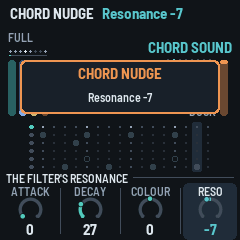
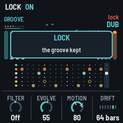
4 The screen

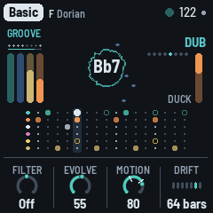
- Top line: the piece in a tag, its root and mode. On the right, a beat light (a play triangle while resting), the tempo (EXT when it follows MIDI clock), a dot when there are unsaved changes, and the battery: three bars (the outline red when it's nearly empty), or the bars filling in turn while USB powers and charges it. Messages ("ADDED F#", "NEXT CHORD ON THE BAR", "DUB HOLD ON", "KICK OFF") show here for a moment.
- Top left: the section playing (FULL in grey; BREAK, GROOVE and THIN lit up) and eight dots, the phrase's bars, lit up to the bar playing. Bars 4 and 8, the B bars of the phrase plan (see The arrangement), are brighter, ahead and played; under Lock all eight are alike. On the phrase's last bar, dot 8 blinks when the next phrase brings a change: a new plan, another kick shape or another section. Under the dots, a thin line fills up on the way to the next chord (none when Drift is Hold, or in dub hold).
- Top right: the page's name, in teal (PERFORM while it's on), and under it eight dots, one a page, in the panel's order, the page you're on lit. SOLO, in pink, to its left while a solo is on. Above it, in red: "hold" in dub hold, "lock" under Lock.
- The ripples: each stab drops a ring in the middle that spreads and fades. Its outline is the sound itself at that moment, its wave wrapped round the circle: a soft pad a smooth ring, a bright stab a jagged one. The echo's repeats follow it, a ring each echo time, each as strong as the echo's output really is then (measured, not worked out), and a little smoother each time round, as the tape darkens them. So a long Feedback makes long trains of rings, a short one a single ring, and a filtered, ducked or dropped echo shows as it sounds. A stab thrown into the echo makes a thicker, brighter ring. In dub hold the rings turn red, and a new stab makes a single ring (the echo plays what it holds). The chord's name is in the middle (red in dub hold). A new chord comes in big and teal, bouncing big, small, big, small, and settles to white over about a second. Around it the four ping loops each circle as a blue dot, one step a turn's step: its place is where the loop is, and it lights up when the loop plays a ping (dim, a ghost, between). The loops have different lengths, so the dots drift apart and meet again. Under it all, the noise: a grey speck for each of its hits you can hear, and for each dry click (on its side), as bright as it is loud, gone in a moment; a strong hit a brighter one. More Level or Density (the Noise page), more specks. The specks show on the whole piece's ripples only, not on a layer's page.
- ALGORITHM (on any page but a layer's, the Noise page or the Chords page) changes what the middle shows: the ripples, a scope or a spectrum, and then the ripples again (turned back, the other way round). Each piece keeps its own view, saved with it: Haze on the spectrum, say, and Pressure on the scope. With the scope or the spectrum showing, the chord's name moves to the top.
- On a layer's own page (Chord, Pings, Bass, Drums) and its sound page, the middle shows that layer alone: the ripples its notes, in its colour (the stabs on the Chord page, the pings with their loops' dots on the Pings page, a ring a bass note, a ring a drum hit), and the scope or the spectrum its sound, dry. The lanes below keep showing the whole bar, the layer's own in colour and the others in grey (the pings and the noise have no lane: all grey). The Noise page always shows the spectrum, of the noise alone. Dub, PERFORM, Space, Echo and the other pages show the whole piece. - The scope draws the output (left and right mixed) as a thick line. Each trace starts on a rising zero crossing so the picture stands still, and the two traces before it fade behind. Its height follows the level, so a quiet passage still fills it. - The spectrum splits the output into 18 bands, from the sub bass (43 Hz, left) to the hats (11 kHz, right). Each band is a column of segments: teal, then brass, amber and red at the top. The columns jump up with the sound and fall back slowly. A white cap stays at each column's peak for a moment before it drops.
- Left: the four layers' levels as they sound: chord (teal), pings (blue), bass (brass), drums (amber).
- Right: DUCK, how far the beat is ducking the rest, falling from the top with each kick (and, less, on each beat without one).
- The lanes: the bar as it plays, sixteen steps, a lane a layer, each marked in its colour on the left: the stabs (teal), the kick (amber), the hats (white), the rim (pink), the clap (yellow), the bass (brass). A hit that only sometimes comes (the clap in Auto, a lane's Chance under 50%) is a ring, filled when it plays. The step playing is lit. A layer that's out (in a Break, muted in PERFORM, or at level 0) has an empty lane at once. In the stabs' lane, rings show where the echo's repeats land, fainter for each, as the echo's time and Feedback have them; each flashes white as the playhead reaches it.
- Bottom: a rule (on a layer's page, the voice's name at its left: the Noise page's character, the Chords page's walk), then the page's four values, one for each knob: a dial (or, for a switch, its positions as dots) and the value. The one you're turning lights up, and while it turns, the rule says what it does ("HOW LONG THE REPEATS GO ON"); a moment after, the rule is back. A grey knob does nothing here (on an FM page, the voice not FM, or Ratio on a two-operator algorithm; on the Mix page, a muted layer's).
- The cards: a long press's card, in the middle (see The cards).
- The level ring: OCT− / OCT+'s, in the middle (see Controls).
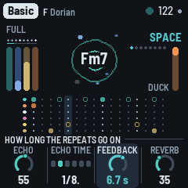
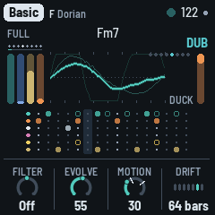
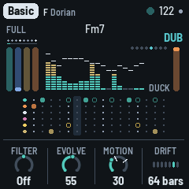
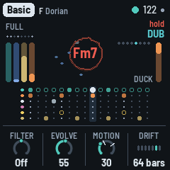

5 The layers
DUB-1 plays four layers from one scale and one chord, on a grid of sixteenths.
- Chord: the stab. Four voices struck together, each two saws a few cents apart, or an FM electric piano (Keys), through a resonant low-pass that opens with each stab and closes again, then a soft clip. The stabs fall on a Euclidean pattern over the bar, off the beat. One voicing (an open minor 7th, root, fifth, seventh and tenth; or a ninth without its fifth) is shifted whole to each new root, the way a chord memory does, its root kept between F#2 and F3. Much of the stab goes to the echo (Wet, on the Chord page, sets the dry against it). Every so often (Drift) the chord moves to another degree of the scale: in a seven-note scale, most often the fourth, then the seventh, the fifth and the sixth; away from home, back home about two times in three. It never moves to a half-diminished chord.
- Pings: short FM blips played by four loops 13, 17, 23 and 29 eighths long. Each loop holds a few notes of the chord (now and then a passing note, or a note an octave up), each in its own register, place in the stereo field and shade of tone, so the loops slide against each other. They go mostly into the echo.
- Bass: a sub on the chord's root, sometimes its fifth, in the sub's band (E1 to Eb2 at home), on one of five grooves: Drone (one long note a bar), Offbeat (the four off-beat eighths), Dotted, Sync and Roller, all its notes or fewer (Density), in the phrase plan (see The arrangement). It slides briefly from note to note. It stays dry, out of the echo.
- Drums: a kick (a sine falling fast onto the key's root, F1 to B1, 44 to 62 Hz; below F its fifth; with a click), a shaker on the sixteenths, an open hat off the beat, and a rim (two short tones and a click, mostly sent into the echo, so it echoes away: the dub snare), on two and four once Hits is 70 or more; and a clap (three quick bursts of noise and a tail, into the plate), rarely: on two or four now and then, about one chance in twenty (a little more with Evolve), in Full and Groove phrases. The kick plays a shape a phrase at a time: none, the downbeat alone, one and three, four with two and four ghosted (10 dB down), or four on the floor. Density (the Drums page) is where the shapes centre; at 100 it's four on the floor, always. The kick ducks everything else (Duck, PERFORM's KNOB 4), and stays out of the echo; the hats send a little to it. On a beat with no kick the music still breathes, ducked a little less (less again while the kick is out, as in a Break): the ghost duck, so the pumping goes on whatever the kick does. The drums play in the phrase plan too.
Then the space: the tape echo (up to 5.6 seconds, synced to the tempo), a granular cloud and Dattorro's plate reverb. The cloud records what goes to the reverb (the last 0.74 seconds, at a quarter of the sample rate) and plays it back in grains: up to six at a time, each 80 to 250 ms from anywhere in what it holds, at a random place in the stereo field, now and then an octave down (rarely up). The grains go into the plate, so they bloom into its tail, and the plate's tail goes back into the cloud: with Cloud up the reverb turns into a moving wash, longer with a bigger plate. The grains come thicker as the filter opens, and in a Break there is more of the cloud. Dub hold freezes the cloud as it does the echo.
The echo dissolves. What goes into the tape is band-limited first (Tone, on the Echo page), and the first repeat comes back clean, a copy of the stab on its time. Each repeat after it goes through a chain of allpass filters on its way round (Blur): every repeat comes back softer and darker than the one before, until it melts into a wash. Each new stab pushes the returns down (by up to 6 dB, back over about 150 ms), so the repeats are heard in the gaps between the stabs, not over them; a thrown stab's repeats ride over. In the feedback, a band-pass also makes each repeat thinner and darker, and moves with the arrangement. Feedback (the Space page) is how long the repeats go on, in seconds: the loop's gain follows the echo's time, so a long echo dies away as soon as a short one. A throw, PERFORM's Echo key and the grid's Swell push it further; a soft clip lets the feedback pass 100% then, so the echo swells on itself without running away. The echo plays from one head, its right side a few milliseconds behind its left (Width: 8 ms at 50), so the repeats spread wide without changing their rhythm; a second head, at three quarters of the loop, joins in only while a thrown stab rings, to the right. With Motion up, the heads wander across the field, and every so often the second head slides to another part of the loop (two thirds, a half, three eighths, a quarter), bending its repeats in pitch on the way. The stabs and the pings are widened too, each side taking a little of the other's sound a few milliseconds later and slowly drifting (with Width), so the two sides differ without the voices being panned further. Under about 80 Hz the mix stays mono.
Under it all, the noise (the Noise page): a crackle groove that rings on the chord, and a quiet hiss (see SAVE: Noise). It plays only while the music plays, fading in and out over about half a second.
Dub throws: now and then a stab is thrown hard into the echo, which pushes the feedback up for a moment: the repeats come back louder, and the stab's dry is 6 dB down, so it's the echo you hear. Throws (the Chord page) sets how often: at 50, about one stab in eight; at 100, about one in three; at 0, none but the last stab of a fill, which is always thrown. There are more in a Break. Evolve lets them in: at 0 there are none, and from 40 up Throws has them all.
Evolve also keeps the patterns moving and the playing loose: every two bars the stab pattern may turn a step or gain or lose a stab; stabs drop out of a bar, and now and then a whole bar has none, the echo carrying it (about one bar in five at Evolve 40, never in a Break); each stab has its own cutoff, a little darker or brighter; at a phrase's start the shaker's steps may trade places or gain or lose one, and the drums' and the bass's plan is drawn again more often (in Auto, more of the hats rest, and they lean later; the bass gets an octave note more often); a ping changes note or moves at the end of a pass, a ping loop sits a pass out, and when the chord moves it may change voicing. It also widens how far the kick's shape wanders from Density. As Evolve goes to 0 all of this tightens: at 0, every stab plays every bar, the same cutoff, no throws, and the phrase plan stays as it is.
6 The arrangement
DUB-1 plays in phrases of eight bars. Each phrase is one of four sections:
| Section | What plays |
|---|---|
| Full | Everything. The filter sweeps somewhere between a little dark and open. |
| Break | The kick, the bass and the shaker out (the open hat stays only while Motion is under 50); the music still breathes on the beat, lightly. The filter goes dark, then from the third bar opens up over two bars or so. Throws are more likely. The noise's hits fewer, ringing longer. |
| Groove | Every other stab of the pattern; the filter in the middle. |
| Thin | No bass, no shaker; the kick's shape a step sparser. The filter a little darker. The noise's hits fewer, ringing longer. |
In the last bar of each phrase, the next one is chosen. Motion has three regions (marked on its ring at 40 and 70):
- Under 40: the loop holds. Full only, phrase after phrase, the kick never leaving; the music moves by its filter, its echo and its texture, as the classic records do.
- 40 to 70: variations. Now and then a Groove or a Thin for a phrase or two, more often as Motion rises; the kick half-time at most, never gone.
- 70 and over: Breaks too. A Break now and then (the kick and the bass out for a phrase).
Between two departures there are always at least four phrases (32 bars) of Full. From any other section it goes back to Full three times in four. PERFORM's Energy and Drop break it by hand at any Motion.
Fills: the last bar before the kick comes back from a Break is always a fill; from Motion 40 a phrase ends with one when the section changes, and now and then otherwise (more often with Motion up); under 40, never. In a fill the kick (if it's playing) drops out for the second half of the bar, the open hat plays (if Hits gives it any steps), and the last stab is thrown into the echo.
The sweep: the arrangement moves a slow filter sweep, from dark to open, and Motion sets how far it goes (at 0 it stays put). It opens the stabs' filter (up to an octave and a half either way) and its resonance, moves the echo's band-pass, thins the pings in the dark, moves the noise's tone and takes a little off the reverb when it's open.
The kick, a few phrases at a time: the kick takes a shape (none, the downbeat, one and three, four with two and four ghosted, four on the floor) and keeps it for two to six phrases (fewer as Evolve rises), drawn round the Drums page's Density: the nearer a shape is to it, the likelier. From Density 90 it's four on the floor in every Full or Groove phrase, ghosted or half in a Thin; at 100, always. Under Motion 70 it never goes silent in Full. A piece starts on four on the floor for its first three phrases, and after a Break the kick comes back whole. Evolve lets the shape wander further; Energy (PERFORM) moves it. With the Pattern page on Pattern, your kick lane plays instead. The shape is chosen in the phrase's last bar (dot 8 blinks if it changes), and Lock keeps it.
The phrase plan (the drums and the bass): a phrase plays A A A B A A A B. A is the main bar, the same every time; B, on bars 4 and 8, is a variant, drawn once a phrase, either sparse (the kick on the downbeat alone, the shaker on the eighths, no open hat, the bass on every other of its notes) or busy (a ghost kick just before the next bar, the hats all in with a pickup, the bass's whole groove and a pickup into the next bar). At Density 100 the kick stays four on the floor in a B bar too. Which of the hats' and the bass's notes rest (Hits, Density and Evolve's looseness), the hats' feel (each step's accent and how late it comes) and, now and then, one bass note an octave up are drawn once a phrase too, the same every bar. At a phrase's start the plan is kept (a motif that comes back) or drawn again: more often as Evolve rises (at 55, about half the time; at 100, four times in five), never at Evolve 0. Lock keeps it. The screen marks the B bars (dots 4 and 8, brighter) and blinks dot 8 when the next phrase brings a new plan.
7 The pieces
PRESETS chooses one of eight pieces. Each is a recipe for the whole machine: the layers, the sounds, tempo, key and mode, the groove, the space, how busy it is and how far it moves. Each remembers how you left it. Hold GLO for 1.5 s to put the piece you're on back to its recipe. Tune, MIDI out and Lights are the same for all.
| Piece | What it is |
|---|---|
| Basic | F Dorian, 122, after Basic Channel's BCD: held, saw stabs, short, into a clean dotted-eighth echo, the dry forward, almost no hats, narrow and dark, the kick on the floor; a new chord every 64 bars. |
| Chamber | A minor, 128, after Fluxion's Vibrant Forms: one chord that never moves (Drift on Hold), warm organ stabs up front, a long half-note echo, a drone bass, an even four, the steadiest loop, the noise ringing on the key (Room). |
| Steppers | D Dorian, 126, after Maurizio's M-Series: the most frozen loop, one chord held, short saw stabs, a dotted bass, the open hat on the four "ands", real swing, clean. |
| Fog | G minor, 120, after Echospace's The Coldest Season: pad stabs lost in a quarter-note echo and a big plate, very wide, hiss (Tape), offbeat hats, a drone bass, a kick that comes and goes, a rare Break; the chord moves every 64 bars. |
| Concrete | C pentatonic minor, 136, after Monolake's Hongkong: the fastest. Chords stacked in fourths, short bright noise stabs, glassy pings over them, a rolling bass, loud hats, a clean dotted-eighth echo, deep filter sweeps, a vinyl crackle. |
| Night Drive | Bb Dorian, 120, after Intrusion's The Seduction of Silence: FM keys, more pings, an offbeat bass with a deep sub, a dotted-quarter echo, very wide, a filter that's played; variations now and then; a new chord every 16 bars. |
| Pressure | E Phrygian, 126, after Porter Ricks' Biokinetics: it never breaks; the kick and the bass forward, one chord held, a wide tape-noise bed under it, wide. |
| Haze | Eb major, 116: the sparse intro. Pad stabs, the longest, the most echo, pings an octave up and the most of them, a kick that comes and goes, dry and dusty (Dust), wide; variations, no Breaks. |
The pieces' echo tails run from about 4 to 8 seconds.
8 The pages
One page a part, each on its own button, with four values on KNOB 1–4. SELECT steps through them in the order their buttons sit on the panel: Space (FX), Chord (ENV), Bass (LFO), Setup (GLO), then Dub (HOME), Noise (SAVE), Pings (ARP), Drums (SEQ). This chapter takes them by layer.
Each layer's page starts with its Density on KNOB 1: how many stabs, pings, bass notes, kicks or noise hits.
The layers' levels aren't on their pages: OCT− / OCT+ set them on each layer's page (and its sound pages; the noise's on the Noise page), 5 a press, and both together mute it (see Controls); PERFORM's Mix page (white 6 held) has the four together.
The voices
On a layer's page, ALGORITHM steps through that layer's voices (after the last, the first again). The voice's name shows at the left of the knob strip, and a message says it ("VOICE Organ"). Each piece keeps its own.
| Page | Voices |
|---|---|
| Chord (ENV) | Saws (two detuned saws a voice), Keys (an FM electric piano), Organ (four drawbars, longer), Pad (the saws swelling in, long), Bell (FM at 3.5, the clang dying first), Tonewheel (a second organ: drawbars, a quick percussion and a key click at each strike, a rotary speaker turning left and right), Noise (noise through the resonant filter, a little saw under it) |
| Pings (ARP) | Blip, Marimba (a wooden bar), Glass (long and bright), Wood (a knock), Drop (the pitch falling from an octave up) |
| Bass (LFO) | Sub (a sine and a little of its octave), Punch (FM, four operators stacked: a thump in the first 90 ms), Rubber (FM, two pairs, one an octave under, op 4 feeding back), Pluck (FM at 3, gone in 50 ms), Growl (FM at 1: a bite at each note) |
| Drums (SEQ), the kit | Tight, Deep (long, 808-ish), Punch (short and hard), Soft (a muffled thump, no click), Dusty (darker, noisier hats) |
The voices are matched in level, so changing one keeps the mix.
The FM pages
Keys and Bell (chord), every ping voice, and Punch, Rubber, Pluck and Growl (bass) are FM voices: sine operators modulating each other, as in the FM-1's own firmware and the 4-operator FM synths. On those, the layer's button pressed a third time (after the sound page) opens its FM page. On a voice that isn't FM (Saws, Organ, Pad, Tonewheel, Noise; Sub) the page says so and names the FM ones: turn ALGORITHM there to pick one. Until you do, the first three knobs are grey and do nothing when turned (what you set on an FM voice is kept for when you come back to one); the fourth, the LFO, works on every voice.
- Algo: which operators modulate which. Voice (the voice's own), or one of the classic eight 4-operator algorithms (1: a stack of four; 5: two pairs; 8: four sines side by side), or 2-op (one modulator into one carrier). The screen draws it: the carriers (heard) on the line, each modulator above the one it modulates, operator 4's feedback as a loop. Its ten positions show as dots.
- Ratio: operators 3 and 4's pitch against the note, from half to twice the voice's. On a two-operator algorithm (2-op, or a voice's own: Pluck, Growl, and every ping voice but Glass) there are no operators 3 and 4, so it's grey and rests.
- Feedback: operator 4 modulating itself, more than the voice's own (0) towards gritty, and noise.
- LFO: a slow sweep in time with the bars, 0 (off) to 100 (the deepest). The chord: its filter, up to an octave and a half either way, over two bars; the pings: their brightness (how hard the modulators work), over a bar; the bass: its bite, over four bars. The pieces sweep their chords a little (20 to 30) and leave the pings and the bass still.
Algo and Ratio are relative to the voice (Voice, 0); Feedback and the LFO start from the voice as it is at 0. Each stays when the voice changes, and is kept by the piece.
The sound pages
Press a layer's button again (ENV on the Chord page, ARP on Pings, LFO on Bass, SEQ on Drums) for its sound page: four more knobs that shape its voice. The button blinks while you're there; press it again to go back, or go anywhere else as usual. ALGORITHM still changes the voice.
Most knobs are relative to the voice as it is: 0, the middle, is the preset; turning moves away from it, to −50 or +50 (with the notch at 0). Two are one-sided, 0 to 100 from the voice's own, since the voice can't go the other way: the chord's Attack (0 the voice's strike, slower from there) and the pings' Bend (0 the voice's own fall, more from there). The chord's Decay is its own, 0–100. Your turns stay when you change the voice, so a chord made slower and brighter stays slower and brighter on the next voice. Holding GLO 1.5 s (the piece back to its recipe) puts them back to 0. Each piece keeps its own.
The middle of the screen shows the layer live, as its page does: its own ripples (or, with ALGORITHM's view, the scope or the spectrum of its sound), with the chord's name.
| Sound page | KNOB 1 | KNOB 2 | KNOB 3 | KNOB 4 |
|---|---|---|---|---|
| Chord | Attack: 0 the voice's strike, up to a slow swell | Decay: how long a stab rings, 0–100, from 60 ms to 1.5 s (times the voice's own length) | Colour: as each voice has it: the saws' detune, the FM voices' brightness, the organs' upper drawbars, the noise against its saw | Reso: the filter's resonance |
| Pings | Tone: round to metallic (moves the piece's Ping tone) | Ratio: the FM modulator, from harmonic to clangy | Length | Bend: the pitch falling at the strike, 0 the voice's own, up to from four times its note |
| Bass | Bite: drive, and Growl's bite | Shape: up, towards a square; down, towards a pure sine | Length: how long each note holds, against its groove's | Slide: the glide between notes, ~1 ms to ~250 ms |
| Drums | Kick tune: semitones from the key's note, −12 to +12 | Kick len | Punch: the kick's start pitch and its click | Hat len: how long the shaker and the open hat ring, from about half the kit's to twice |
The chord's Decay is the voice's length times its own: an Organ or a Pad rings longer than Saws at the same Decay. The filter's own envelope is quicker. How far each stab opens the filter comes with the voice and the piece.
HOME: Dub
The song as it plays. ALGORITHM (here and on any page but a layer's, the Noise page or the Chords page): the middle of the screen as ripples, scope or spectrum (see The screen). HOME again: the Key page (below).
- Filter: the DJ filter on the whole music but the kick. Down (Shut 1–100), a low-pass that takes it under water; up (Open 1–100), a resonant high-pass that thins it; Off in the middle, where the knob stops on its way through. It's PERFORM's Filter too (see Controls): for playing, so it isn't saved, and it stays where it is when you change piece.
- Evolve: how restless and loose it is: the stab pattern turning and gaining or losing stabs, stabs and whole bars dropping out, each stab's own cutoff, the shaker's pattern and looser hats, the pings' notes, loops sitting out, octave jumps in the bass, how far the kick's shape wanders, and whether there are dub throws at all (see The layers). At 0, with Motion at 0 and the Drums page's Density at 100 too, it's a strict loop: every stab every bar, the kick four on the floor, no throws, no fills, the phrase plan as it was drawn when the music started (good for playing along with other gear). To keep the groove at any Evolve, hold SEL: Lock. Above 40 it also nudges the sound by itself: now and then, on a phrase's first bar, one or two of one layer's sound values take a step (half a nudge by hand's), so over a long run the piece slowly changes colour (at 100, about every third phrase; at 40 and under, never; under Lock, never). It never shakes. Above 60 it also moves the bass's groove, rarely, to a neighbour (Offbeat to Dotted, say), and back towards the piece's own later: at 100, every few minutes; at 60 and under, never. The groove away from home usually lasts a few minutes, so a long run's bass line slowly breathes.
- Motion: the arrangement, in three regions (marks on the ring at 40 and 70): under 40 the loop holds, 40 to 70 a variation now and then, from 70 Breaks too (see The arrangement). It also sets how far the filter sweeps and how much the echo's heads, the filter and the band-pass wander.
- Drift: how many bars a chord lasts before it moves on: 2, 4, 8, 16, 32 or 64 bars, or Hold (it moves only when you press EDIT). The chord moves at the start of a bar.
HOME again: Key
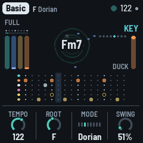
The piece's key and time, which a dub track seldom changes. HOME blinks while you're here; HOME again goes back to the Dub page.
- Tempo: 90 to 140. Also HOME + SELECT, from any page.
- Root: the key's root note. The scale moves with it, and the chord at once.
- Mode: Minor (Aeolian), Major (Ionian), Dorian, Mixolydian, pentatonic minor and major, Phrygian, Lydian (the most common first; the screen shows Aeolian as Minor and Ionian as Major); it loads the mode's scale. Editing the scale with the keys makes it Custom.
- Swing: the off sixteenths late, from straight (50%) to a heavy lilt (70%): everything on them, the stabs, the bass, the pings and the drums, together.
ENV: Chord
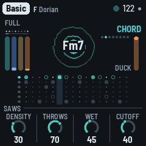
- Density: how many stabs a bar, from one (0 to 9) to six (90 and up), on a Euclidean pattern off the beat. Evolve may add or take one now and then, leave one out, or rest a whole bar.
- Throws: how often a stab is thrown into the echo: at 0, never (but the last stab of a fill); at 50, about one stab in eight; at 100, about one in three. More in a Break; none at Evolve 0. A thrown stab's dry is 6 dB down. PERFORM's Throw and the grid's throw every stab, whatever it is.
- Wet: the stabs dry against their echo. At 0, up front, the dry at full and the echo as it was; at 50, the dry 6 dB down and a little more into the echo; at 100, the dry down to about −20 dB and the echo pushed further: almost all echo. The reverb stays as it is. PERFORM's Wet moves it (and the pings', the echo's send and the noise) on top.
- Cutoff: where the low-pass sits, from 110 Hz to 5.4 kHz. Each stab opens it further for a moment, the arrangement's sweep moves it (with Motion), and with Evolve each stab sits a little higher or lower (up to about half an octave).
How long a stab rings (Decay) is on the Chord sound page (ENV again). The stab's sound, the voice, comes with the piece (ALGORITHM changes it).
ARP: Pings
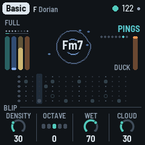
- Density: how many notes each loop holds, none at 0 to five at the top, a little fewer while the sweep is dark. A change shows up as each loop comes round.
- Octave: the pings two octaves down to two up (KNOB 2, as on the Bass page). While playing, a ping sounds at once in the new octave.
- Wet: the pings dry against their echo and reverb, which stay as they are. At 50, the dry 6 dB under the sends' share; at 0, up front (6 dB more); at 100, the dry down to about −20 dB: almost all echo, ghosts of notes. PERFORM's Wet moves it on top.
- Cloud: how much of the reverb goes through the granular cloud: at 0 the plate alone, at the top a thick wash of grains.
SAVE: Noise
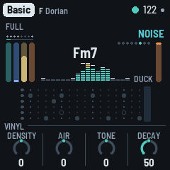
SAVE, a tap; again, Noise space (below), and again back. It's on SELECT's round too, between Dub and Pings, and SELECT goes on from there. The noise isn't a bed of hiss but a voice of its own, played like the drums:
- The crackle groove: hits on a two-bar pattern of sixteenths, spread evenly (a Euclidean pattern), turned and with a hit or two nudged a step off, now and then one a quiet ghost. When a phrase starts the pattern is drawn again, or now and then kept, so a motif comes back (kept more often as Evolve falls). Break and Thin phrases have fewer hits.
- Rung on the chord: each hit is a short burst of noise that strikes three resonators tuned to the chord's root, third and fifth, low (E1 to Eb2), the root in the middle, the third left, the fifth right. They're retuned at each hit, so the crackle follows the chord. Then a band-pass (Tone) takes the top off: almost nothing above 2 kHz. It goes into the plate, a little into the echo, more while a stab is thrown. In a Break or Thin phrase it rings longer, to carry the music.
- The Air: a quiet hiss under it, and now and then a dry vinyl click.
- Under the duck: the noise dips on every beat, deeper than the music, and swells between.
The knobs are around the piece's own noise, 0 (Decay 50) in the middle:
- Density: how many hits ring in the two bars, from 2 to 16 (with the character's own lean); the dry clicks come with it.
- Air: the hiss under it, softer or more.
- Tone: the band-pass, the rings darker (about 250 Hz) or brighter (up to about 2 kHz). The arrangement's sweep moves it too.
- Decay: how long each hit rings on the chord, from a knock (about 70 ms) to a hum (over a second).
- The level is on OCT− / OCT+, as the layers' are, 5 a press; both together mute the noise, its level kept.
- ALGORITHM: the noise's character, the same machine set otherwise: Vinyl (the default: the crackle groove rung on the chord), Tape (the hiss through the resonators too, a pad that swells between the beats; fewer hits, longer, darker), Dust (dry clicks and bursts, no ringing; more of them, brighter), Room (on the key's tonic triad instead of the chord, long, more air), Machine (inharmonic, metallic). Its name shows at the left of the knob strip, and a message says it ("NOISE Tape").
The middle of the screen shows the spectrum of the noise alone, so you can see its colour as it moves. Each piece has its own: Basic and Steppers on Vinyl, Fog and Night Drive on Tape, Chamber on Room, Concrete on Vinyl too, Haze on Dust, Pressure a quieter, darker Vinyl.
SAVE again: Noise space
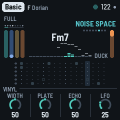
Where the noise sits, and how it moves. SAVE blinks while you're here; SAVE again goes back to the Noise page. ALGORITHM still turns its character. 50 is the noise as the pieces have it:
- Width: the rings mono (0) to wide (100): the third further left, the fifth further right.
- Plate: how much of it rings in the plate, none at 0, twice at 100.
- Echo: how much of it goes into the echo, none at 0, twice at 100 (a thrown stab still sends more).
- LFO: the rings' tone swept in time with the bar, 0 (off) to 100 (an octave either way): brightest on the second beat, as the chord's LFO is brightest on the third, so the two move apart. Each piece has some (30 to 50).
How often the noise's groove changes, and how fast its levels, tone and decay drift, is each piece's own (its recipe); the groove is drawn anew at a phrase's start now and then, more often as Evolve rises, and Lock keeps it. Its drifts move on the barlines.
PERFORM's Wet moves the noise too: its dry down and its plate and echo up, or the other way.
LFO: Bass
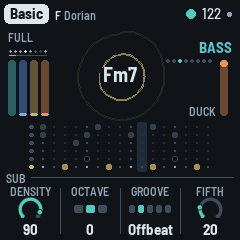
- Density: how many of the groove's notes play. At 100, every one; lower, some are left out (at 50 about half), the bar's first note always kept. Which ones is drawn once a phrase (the phrase plan): the same every A bar, every other one in a sparse B bar, the whole groove in a busy one. Energy (PERFORM) thins it further, or fills it back towards every note.
- Octave: −1, 0 or +1. At 0 the bass sits between E1 and Eb2 (41 to 78 Hz); at +1 an octave higher; at −1 an octave lower, E0 to Eb1 (21 to 39 Hz): felt more than heard, and lost on small speakers.
- Groove: the pattern, from sparse to busy: Drone (one note a bar, held almost to the next), Offbeat (the four off-beat eighths), Dotted (two notes a dotted eighth apart, twice a bar), Sync (three notes, syncopated) and Roller (six notes a bar, rolling). Density thins any of them.
- Fifth: how often a note is the chord's fifth instead of its root. A note on the bar's first sixteenth is the root, except with Drone: there Fifth sets how often a whole bar is the fifth.
SEQ: Drums
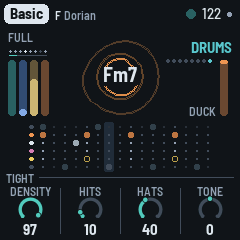
- Density: the kick's shape, chosen a phrase at a time: none, the downbeat alone, one and three, four with two and four ghosted (10 dB down), or four on the floor. Density is where the shapes centre: about 0 none, 25 the downbeat, 50 one and three, 75 the ghosted four; each phrase draws one near it, the nearest likeliest. At 100, four on the floor, always. Evolve lets it wander further, a Thin phrase takes it a step sparser, and Energy (PERFORM) moves it. The kick is out in a Break and the second half of a fill; with the Pattern page on Pattern, your kick lane plays instead.
- Hits: how busy the hats are. The shaker plays from none to all twelve sixteenths that aren't the open hat's, the ones before the beats first. The open hat comes in at 15, on the off-beat of beats 1 and 3, and plays all four off-beats from 40. At 0, the kick only. Which of them rest (with Evolve) and their feel are drawn once a phrase: the phrase plan (see The arrangement).
- Hats: the shaker and the open hat against the kick: at 50, as the pieces have them; about 12 dB down at 0 and 12 dB up at 100. The drums' level (OCT− / OCT+, the Mix page) moves the kick, the hats and the rim together.
- Tone: how dark or bright the hats are, around the piece's own colour (−50 to +50; it was the Drum sound page's Hat tone).
Duck, how far each beat pushes the rest down, is PERFORM's KNOB 4 now (see Controls). Swing is on the Key page (HOME, then HOME again). How long the hats ring is on the Drum sound page (Hat len).
The Pattern page (SEQ a third time, after the Drum sound page): the drums' five lanes, sixteen steps each, to write yourself.
| KNOB 1 · Lane | Kick, Shaker, Open (hat), Rim, Clap |
| White keys 1–16 | the lane's sixteen steps: a key turns its step on or off (lit when on) |
| A black key held + a white key | that step accented (on, and drawn taller) |
| KNOB 2 · Accent | how much quieter the unaccented steps are, 0 to 100 |
| KNOB 3 · Chance | how likely the lane's steps are to play, 0 to 100%: loose, breathing hats (the clap starts at 5%: rare, as it shines) |
| KNOB 4 · Play | Auto (the patterns generated from Density and Hits) or Pattern (yours) |
The first step you change takes the pattern over from what Auto was playing, and switches Play to Pattern. The arrangement still takes lanes out over yours (a Break, the second half of a fill, PERFORM's mutes), and Swing still delays the off sixteenths. Your patterns play as written, each step by its lane's Chance: the kick's shapes, the phrase plan's B bars and the hats' feel are Auto's (the bass still plays its plan). The patterns are kept with the piece.
FX: Space
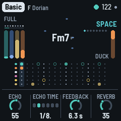
- Echo: how much goes to the echo.
- Echo time: the tape loop's length: an eighth, a dotted eighth, a quarter, a dotted quarter, a half or one bar. The second head, heard while a throw rings, repeats at three quarters of it, or with Motion up, wherever it has slid to.
- Feedback: how long the repeats go on, shown as the time they take to die away (to −60 dB): 1.5 s to 15 s. The loop's gain follows the echo time, so a long echo fades as soon as a short one. Throws, PERFORM's Echo key and the grid's Swell still push it further; past 100% the soft clip holds it, and the echo swells and smears on itself. While resting it's kept under 90%, so the tails always die out.
- Reverb: how much goes to the plate.
FX again: Echo
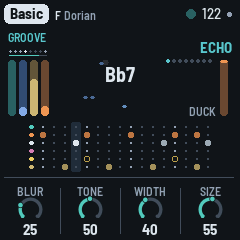
FX on the Space page opens the Echo page (FX blinks while you're here); FX again goes back. The four are 0 to 100; 50 is the echo as the pieces have it.
- Blur: how much each repeat dissolves: at 0, clean copies; at 50, each a little softer and more smeared than the last; at 100, a wash.
- Tone: what goes into the echo, darker or brighter: a low-pass at about 2 kHz at 50, an octave down or up for every 25 (from about 500 Hz to 5 kHz).
- Width: how wide the echo, the stabs and the pings sit: at 0, mono; at 50, wide; at 100, as wide as the widest records (Fog and Night Drive have 85).
- Size: how long the plate rings.
GLO: Setup
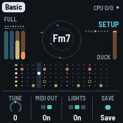
What holds for every piece and the whole machine (the root is the piece's: on the Key page). GLO again stays here.
- Tune: fine tuning, ±50 cents.
- MIDI out: on or off.
- Lights: On: the keys light the scale, and the unlit buttons glow dimly so they can be read on the black FM-1. Keys: the key lights only. Off.
- Save: a turn saves all eight pieces. It shows Save, its dot lit, while there are unsaved changes, and Saved after. (GLO held does the same.)
On this page the top right shows the machine instead of the tempo. CPU 35/61 is how much of the FM-1's time the sound takes: 35% now (smoothed), and 61% at the heaviest moment of the last two seconds. Under 100% the sound never breaks up; if it ever did, a ! and a count of the dropouts would follow. When a moment runs heavy (past 75%), DUB-1 sheds for half a second what is least heard: the quietest tails of the stabs and the pings, the cloud's new grains, the noise's new hits and the width, eased back as the load falls, so a crowded moment doesn't break up. Then, next to the battery icon, a rough charge in % (67%), or USB when a computer powers (and charges) the FM-1.
9 MIDI
MIDI comes in over USB and the TRS jack, and goes out over USB.
- In, channel 1: a note adds or removes its note from the scale, like a key.
- In, clock: the grid follows MIDI clock (six clocks a sixteenth), and start, continue and stop start, continue and stop the music. The screen shows EXT for the tempo. When the clock stops coming, DUB-1 goes back to its own tempo.
- Out (on by default): the chord on channel 1, the pings on 2, the bass on 3 and the drums on 10 (kick 36, shaker 42, open hat 46), and, while it plays on its own tempo, clock with start / stop. Turning MIDI out off sends All Notes Off on channels 1, 2, 3 and 10.
Screen reader
DUB-1 can tell a screen reader what its screen shows. Connect the FM-1 by USB, open the FM-1 Screen Reader in Chrome or Edge, and click Connect. It reads out the page you're on and its knobs, a knob's value as you turn it, the piece and its key, the notes you add or take out, every message, and the chord each time it moves. Press W to hear the whole screen again: the page, the piece, the chord, the section and its bar, and the scale. The FM-1 says nothing until the page connects, so a DAW on the same cable never sees it.
DUB-1's word list (how the reader says what's written on the screen) is published with DUB-1's site, and the FM-1 tells the reader where to find it.
10 Saving
DUB-1 keeps all eight pieces in the FM-1's memory, each as you left it: the knobs, the scale, the mode, the root, the tempo and the pings' octave, plus Tune, MIDI out and Lights.
- By itself: a few seconds after a change, but only while resting and once the stabs have died away. Writing to the memory interrupts the sound for a moment, so it never happens while the music plays. A dot at the top of the screen means there are unsaved changes.
- GLO held for half a second, then let go: saves now, playing or not ("SAVED").
- Setup's KNOB 4 (Save): shows Save, its dot lit, while there are unsaved changes, and Saved once there aren't; a turn saves.
- Hold GLO on for 1.5 s: the piece goes back to its recipe ("RESET"). That isn't saved until the next save, so switching off before then brings your version back.
Lock and PERFORM's Filter, Wet and Energy aren't saved; PERFORM's Duck is the piece's, and is.
Projects saved by an older DUB-1 are read and converted. A piece you never changed takes its new recipe, so it sounds as this version tunes it: DUB-1 recognises it by comparing it with that piece's recipes as they have been since 1.0.0, and with its scale. A piece you changed keeps what you set, and the values that are new (the chord's Wet, the kick's Density, the echo's Blur, Tone and Width, the noise's Decay, Width, Plate and Echo, the hats' length) come from its recipe. A value saved past a knob's range as it is now (the chord's Attack, the pings' Bend and the FM pages' Feedback are 0–100 from the voice's own now; the FM pages' Mod dec is now the LFO) is brought to that range's nearest end, the rest kept. To get a changed piece's whole new recipe, hold GLO for 1.5 s on it. Projects saved by AMB-1 aren't read by DUB-1: the first start after installing it begins with the eight recipes.
11 Troubleshooting
Update mode: hold OCT- and OCT+ together for five seconds. A countdown appears; let go before it ends to cancel. (A quick press of both, let go within a second, is a layer's mute on its page; holding them longer never mutes anything.)
Calibration: if a button or knob does the wrong thing, hold OCT- and OCT+ while you switch the FM-1 on. The screen then asks you to press each button and turn each knob in turn.
After a crash: DUB-1 shows a red CRASH screen and restarts by itself a few seconds later. The next start shows RESTARTED AFTER A CRASH and an address (PC ...) for a moment. If you report the problem, include that address and what you were doing.
Safe mode: if DUB-1 crashes twice in a row while starting, it starts in SAFE MODE instead. There's no sound, but USB works, so the installer can reach it: reinstall with tools/fm1_install.py, or put the stock firmware back with M-UPGRADE. Press PLAY to try starting DUB-1 normally again. If even safe mode fails twice, the FM-1 drops into the chip's own update mode, and only the rescue below can reach it.
Recovering an FM-1 that won't start
An FM-1 in the chip's own update mode shows a blank screen, and neither the installer nor M-VAVE's updater can see it. A script can put M-VAVE's firmware back, on a Mac, with the USB cable you already have.
Open Terminal in a checkout of the DUB-1 source and run:
bash tools/fm1_rescue.sh- If a window asks to install the command line developer tools, click Install. When it has finished, run the line again.
- If it asks for a password, type your Mac password (nothing shows as you type) and press Return.
- When it says it's waiting, plug the FM-1 in and switch it on. The script catches it, checks the chip, saves a backup of the FM-1's memory in the
fm1-rescuefolder in your home folder, and asks before it writes anything. - Type yes and press Return. Don't unplug anything until it says it's restarting the FM-1. The FM-1 then starts into its original firmware, and you can install DUB-1 again from there.
The script downloads its rescue tool from X0X's repository, M-VAVE's FM-1 V15 firmware and JieLi's flash loader, and checks the firmware against a known fingerprint. It writes only the firmware area of the memory, never the bootloader or the FM-1's own settings, and checks everything it writes. Running it again is always safe. If the FM-1 never shows up at all, Felucca's FM-1-transporter (a small RP2040 board wired to the USB lines) can still reach it.
12 Parameters
The defaults are Basic's; each piece has its own.
| Page | Value | Range | Basic |
|---|---|---|---|
| Dub | Filter | Shut 100 – Off – Open 100 (for playing, not saved) | Off |
| Dub | Evolve | 0–100 | 55 |
| Dub | Motion | 0–100 (under 40 held, 40–70 variations, 70– Breaks) | 30 |
| Dub | Drift | 2, 4, 8, 16, 32, 64 bars, Hold | 64 bars |
| Chord | Density | 0–100 (1 to 6 stabs a bar) | 30 |
| Chord | Throws | 0–100 (none – about 1 stab in 8 at 50 – about 1 in 3) | 70 |
| Chord | Wet | 0–100 (the dry 0 dB – −6 dB at 50 – −20 dB) | 45 |
| Chord | Cutoff | 0–100 (110 Hz – 5.4 kHz) | 40 |
| Pings | Density | 0–100 (0 to 5 notes a loop) | 30 |
| Pings | Octave | −2 – +2 | 0 |
| Pings | Wet | 0–100 (the dry 0 dB – −6 dB at 50 – −20 dB) | 70 |
| Pings | Cloud | 0–100 | 30 |
| Noise | Density, Air, Tone | −50 – +50 | 0 |
| Noise | Decay | 0–100 (about 70 ms – over a second) | 50 |
| Noise | Character (ALGORITHM) | Vinyl, Tape, Dust, Room, Machine | Vinyl |
| Noise space | Width, Plate, Echo | 0–100 (50: as the pieces have it) | 50 |
| Noise space | LFO | 0–100 | 25 |
| Bass | Density | 0–100 (100: every note of the groove) | 90 |
| Bass | Octave | −1 – +1 | 0 |
| Bass | Groove | Drone, Offbeat, Dotted, Sync, Roller | Offbeat |
| Bass | Fifth | 0–100 | 20 |
| Key | Tempo | 90–140 | 122 |
| Key | Root | C – B | F |
| Key | Mode | 8 modes, or Custom | Dorian |
| Key | Swing | 50%–70% | 51% |
| Drums | Density (the kick's shapes) | 0–100 (from 90: four on the floor in Full; 100: always) | 97 |
| Drums | Hits | 0–100 | 10 |
| Drums | Hats | 0–100 (−12 dB – ×1 at 50 – +12 dB) | 40 |
| Drums | Tone (the hats) | −50 – +50 | 0 |
| Space | Echo | 0–100 | 55 |
| Space | Echo time | 1/8, 1/8., 1/4, 1/4., 1/2, 1 bar | 1/8. |
| Space | Feedback | 1.5 s – 15 s (the tail, to −60 dB) | 6.3 s |
| Space | Reverb | 0–100 | 35 |
| Echo | Blur | 0–100 | 25 |
| Echo | Tone | 0–100 | 50 |
| Echo | Width | 0–100 | 40 |
| Echo | Size | 0–100 | 55 |
| Setup | Tune | −50 – +50 cents | 0 |
| Setup | MIDI out | Off, On | On |
| Setup | Lights | Off, On, Keys | On |
| Perform | Filter, Wet, Energy | −100 – 0 – +100 (Filter: Shut, Off, Open); for playing, not saved | 0 |
| Perform | Duck | 0–100 (to −12 dB); the piece's, saved | 50 |
| SEL held | Lock | Off, On; not saved | Off |
| ALGORITHM | Screen (all pages but a layer's, the Noise pages and the Chords page) | Ripples, Scope, Spectrum | Ripples |
| ALGORITHM | The walk (Chords page) | Home, Wander, Free | Wander |
| ALGORITHM | Chord voice (Chord page) | 7 voices | Saws |
| ALGORITHM | Ping voice (Pings page) | 5 voices | Blip |
| ALGORITHM | Bass voice (Bass page) | 5 voices | Sub |
| ALGORITHM | Kit (Drums page) | 5 kits | Tight |
| Chord sound | Attack | 0–100 (from the voice's own strike) | 0 |
| Chord sound | Decay | 0–100 (60 ms – 1.5 s, times the voice's) | 25 |
| Chord sound | Colour, Reso | −50 – +50 | 0 |
| Ping sound | Tone, Ratio, Length | −50 – +50 | 0 |
| Ping sound | Bend | 0–100 (from the voice's own) | 0 |
| Bass sound | Bite, Shape, Length, Slide | −50 – +50 | 0 |
| Chord, Ping, Bass FM | Algo | Voice, 1–8, 2-op | Voice |
| Chord, Ping, Bass FM | Ratio | −50 – +50 | 0 |
| Chord, Ping, Bass FM | Feedback (from the voice's own) | 0–100 | 0 |
| Chord FM | LFO | 0–100 | 25 |
| Ping, Bass FM | LFO | 0–100 | 0 |
| Drum sound | Kick tune | −12 – +12 semitones | 0 |
| Drum sound | Kick len, Punch, Hat len | −50 – +50 | 0 |
| OCT− / OCT+ (a layer's page), Mix (PERFORM, white 6) | Levels: chord, pings, bass, drums (and the noise: OCT on its page) | 0–100, 5 a press | 52, 30, 68, 80 (noise 8) |
Set by the piece (no knob of its own): the pings' tone (from a round blip to a metallic clank; the Ping sound page's Tone moves it), the hats' colour (the Drums page's Tone moves it) and how far each stab opens the filter. Each piece also has its own voices.
| Piece | Chord | Pings | Bass | Kit | Ping tone | Hats |
|---|---|---|---|---|---|---|
| Basic | Saws | Blip | Sub | Tight | 40 | 50 |
| Chamber | Organ | Glass | Sub | Deep | 30 | 40 |
| Steppers | Saws | Marimba | Punch | Punch | 50 | 60 |
| Fog | Keys | Blip | Sub | Soft | 25 | 30 |
| Concrete | Noise | Wood | Pluck | Punch | 60 | 75 |
| Night Drive | Keys | Drop | Growl | Tight | 45 | 55 |
| Pressure | Tonewheel | Wood | Growl | Deep | 35 | 65 |
| Haze | Pad | Glass | Sub | Dusty | 25 | 35 |
13 Credits
DUB-1 is free software under the GNU General Public License, version 3. If you share the firmware, you must also share its source code.
- DUB-1 is a fork of AMB-1 by Charles Vestal (GPL-3.0-only), whose loops, echo chain, pieces, UI and platform it keeps.
- The idea comes from AMB-1 and from dub techno in general: chords dissolving in a tape echo over a steady kick.
- The reverb is Jon Dattorro's plate ("Effect Design, Part 1", JAES 1997), by way of FoMni-1.
- The granular cloud follows the design of CLOUD in JIANT (GPL-3.0), another FM-1 firmware.
- The Euclidean rhythms are Godfried Toussaint's reading of Bjorklund's algorithm.
- The noise machine (a crackle groove ringing resonators tuned to the chord) follows Bahadirhan Kocer's "Using Resonators in Live".
- The random chords are a weighted random walk over the scale's degrees, adapted from AMB-1's (see The layers). They are voiced as dub techno's chord-memory stabs (Basic Channel, Maurizio): one shape, moved whole to each new root.
- The platform (hardware layer, USB, update loader, installer and storage) is from Felucca by Leo Kuroshita, Hügelton Instruments, by way of X0X, FoMni-1 and AMB-1.
- The idea of running FM-1 firmware in the browser comes from Groove OS.
- The fonts are Barlow Semi Condensed and Terminus (SIL Open Font License).
M-VAVE and FM-1 are trademarks of their owners. DUB-1 is not connected with M-VAVE or Hügelton Instruments.